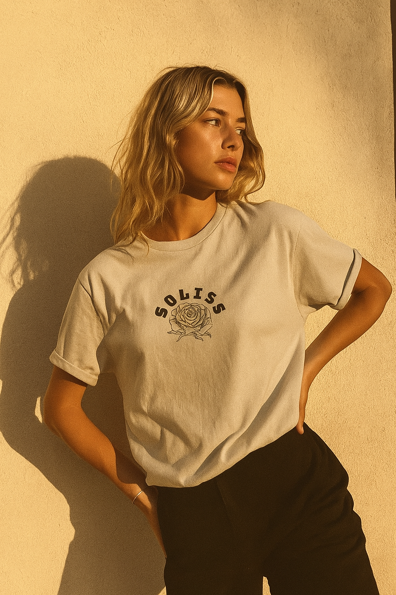

Timeless Fashion. Modern Vision.
SOLISS was founded with the belief that fashion should be more than clothing—it should be a statement. Our designs combine bold creativity with timeless elegance, inspired by individuality and self-expression. What started as a small vision has grown into a label dedicated to pushing style forward.
To empower individuals through fashion that speaks louder than words—bold, elegant, and unapologetically unique. We want to inspire young designers and embrace the creativy that SOLISS stands for.
Stay tuned for our next big statement. Go check out our store with our newest drops!